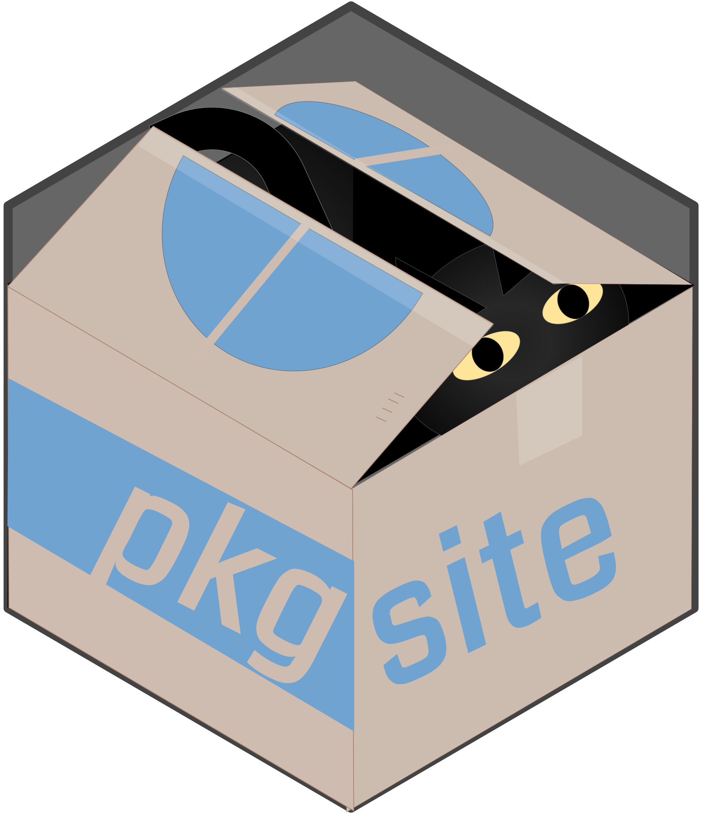

pkgsite


Overview
pkgsite makes it easier to create a Quarto-based package website for R. It reads the compiled .Rd man files in your package and writes them out as .qmd reference pages, plus a page that lists all of the package’s exported functions. It was inspired by Quartodoc, which does the same for Python packages.
When should I use pkgsite?
pkgsite is designed for situations where you specifically need a Quarto site. If that’s not a requirement, pkgdown is a well-developed, mature package that covers all sorts of special needs and will serve most projects well.
A couple of reasons you might reach for pkgsite instead are:
You want to use Quarto’s “freeze” capability - Some examples depend on technologies that aren’t available in CI, such as databases, Spark, or large language models. With freeze, you render the site locally where those technologies are accessible, commit the
_freezefolder, and GitHub can rebuild the site without needing to re-run the code.You want to build a unified site - If your project has both R and Python packages,
pkgsitelets you combine the R reference pages with output from Quartodoc into a single website.
An example of having both reasons to use pkgsite is the mall package, which has both R and Python packages whose examples require an LLM to run. See the resulting reference pages.
Installation
Install the released version of pkgsite from CRAN with:
install.packages("pkgsite")You can install the development version of pkgsite from GitHub with:
# install.packages("pak")
pak::pak("edgararuiz/pkgsite")Usage
The main entry point is write_reference(). Calling it without arguments will create a reference/ folder in your project containing one .qmd file per exported topic, plus an index file.
library(pkgsite)
write_reference()
#>
#> ── pkgsite
#> Creating index file:
#> `reference/index.qmd`
#>
#> Converting .Rd to .qmd:
#> `./man/index_to_qmd.Rd` → `reference/index_to_qmd.qmd`
#>
#> `./man/rd_to_list.Rd` → `reference/rd_to_list.qmd`
#>
#> `./man/rd_to_qmd.Rd` → `reference/rd_to_qmd.qmd`
#>
#> `./man/write_reference.Rd` → `reference/write_reference.qmd`
#>
#> `./man/write_reference_index.Rd` → `reference/write_reference_index.qmd`
#>
#> `./man/write_reference_pages.Rd` → `reference/write_reference_pages.qmd`The function uses sensible defaults, so calling it without any arguments works out of the box. The target folder is resolved in order from: the explicit argument, the dir key under pkgsite > reference in _quarto.yml, and finally "reference" as a fallback.
Configure via the ’_quarto.yml’ file
Just as with Quartodoc, pkgsite supports configuration via the ’_quarto.yml’ file. You just need to add a ‘pkgsite’ section at the top level of the YAML file. Here is an example of the available values, including optional contents for custom function grouping in the index (omit contents to fall back to automatic grouping):
pkgsite:
dir: "." # location of the package
reference:
dir: reference # target folder for qmd files
template: inst/templates/_reference.qmd # reference template location
not_run_examples: true # Flag to run the 'Not Run' examples
index:
file: index.qmd # name of the index file to use
template: inst/templates/_index.qmd # template for index qmd file
contents: # add 'sections' levels
- section: Quarto file creation
contents:
- write_reference.qmd
- write_reference_index.qmd
- write_reference_pages.qmd
- section: Conversion functions
contents:
- index_to_qmd.qmd
- rd_to_qmd.qmd
- rd_to_list.qmdThe mall package has another example: mall/_quarto.yml.
How the index groups functions
pkgsite determines the grouping of functions in the index using the following priority:
-
Custom grouping in
_quarto.yml- Uses the sections and order defined in thecontentskey (see above). -
roxygen2
@familytag - If no custom grouping is set,pkgsitegroups functions based on the@familytag in roxygen2, which writes a\concept{}entry into the Rd file. Functions sharing the same label are grouped together under a section named after that label, with groups sorted alphabetically. - Alphabetical listing - If neither of the above is present, functions are listed alphabetically with no grouping.
Customize the pages
pkgsite includes a templating system that lets you control the layout of the index and reference pages. Each page is driven by a plain Quarto document, so you can re-order sections, add narrative or runnable code chunks, set page-level options, and apply your own branding. If the defaults work for you, you never have to think about it. When they don’t, full control is just a template file away. See the Customize the pages article for details.
Publishing to GitHub Pages
The GitHub Pages article walks through setting up a GitHub Actions workflow that renders and publishes your site automatically on every push to main. It also covers how to use downlit to automatically turn function names in your rendered pages into links to their documentation, also known as auto-linking.